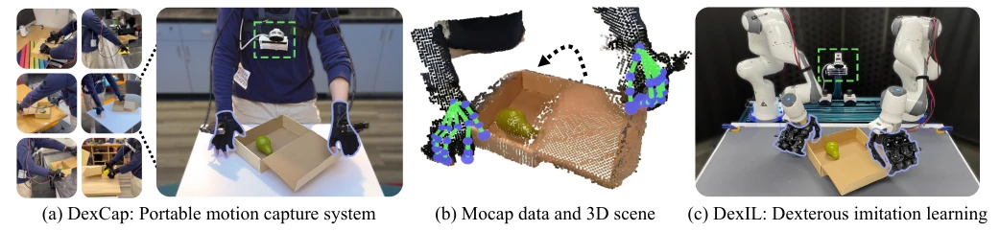
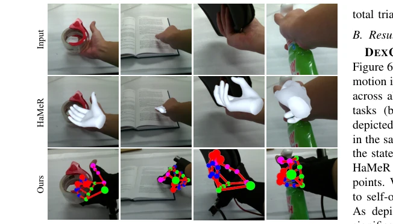
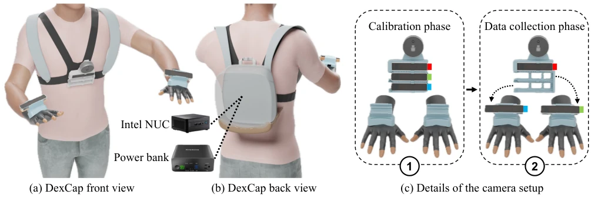
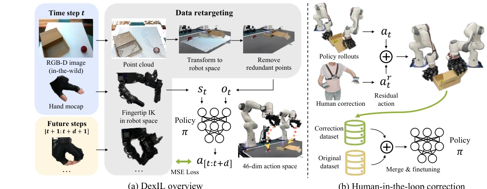
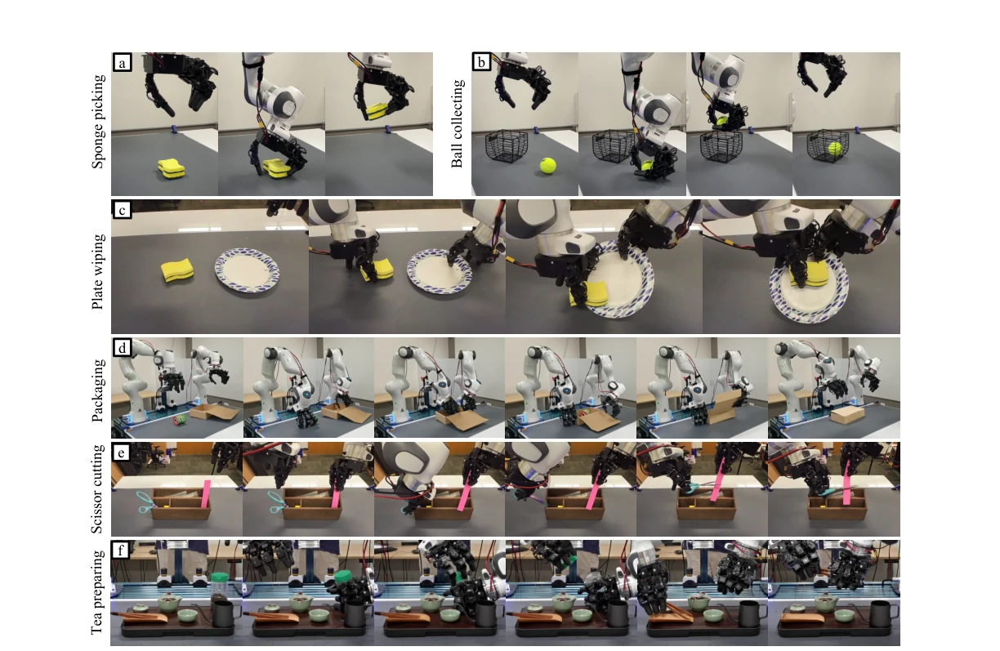
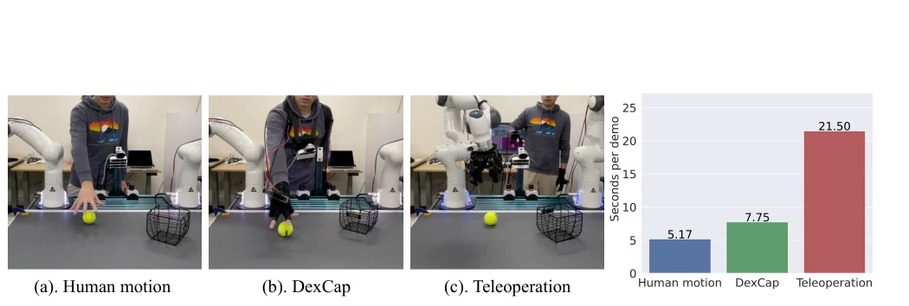
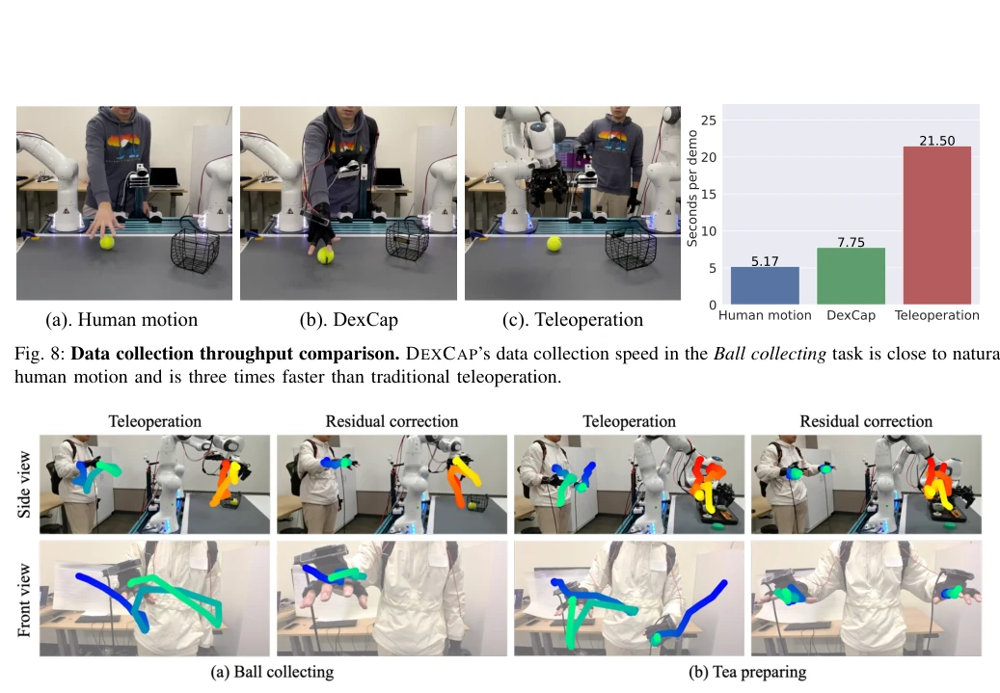
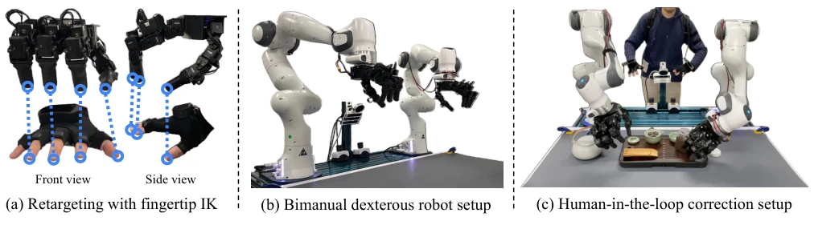
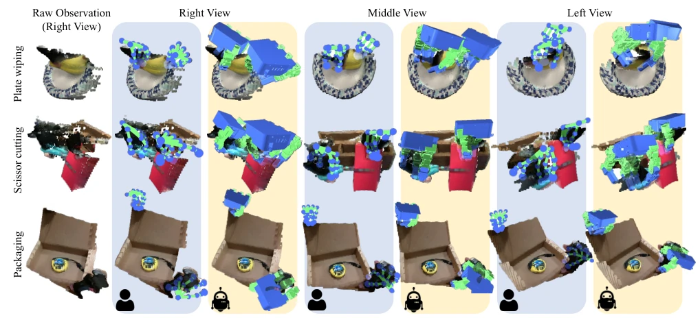
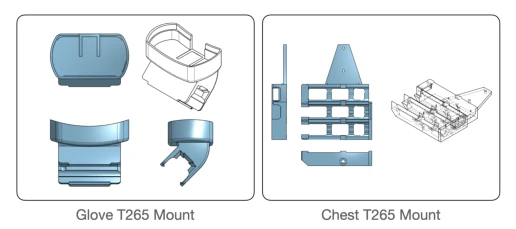

这篇论文搞了个叫 DexCap 的便携动捕系统，主打一个“野外采集”和“灵巧手模仿”。优点很明显，不用真机器人就能录数据，比遥操作快三倍，还能抗遮挡。算法 DexIL 用扩散策略加点云，试图把人手动作迁移到机械手。但槽点也不少：40 分钟续航太短，IK 逆运动学解决不了所有形态差异（比如手指粗细），而且没力觉，玩剪刀这种精细活还得靠人工修正。总的来说，是个不错的数据收集方案，但离“人类水平灵巧”还有距离，别指望拿来就能直接商用，还得靠人工修修补补。对于追求低成本数据闭环的团队来说，这方案挺香，但想直接端到端落地，还得再打磨打磨，毕竟机器人手指比人手粗，光靠 IK 硬凑可不行。
This paper presents a portable motion capture system named DexCap, focusing on "field data collection" and "dexterous hand imitation". The advantages are obvious: data can be recorded without a real robot, it is three times faster than teleoperation, and it resists occlusion. The algorithm DexIL uses diffusion policies combined with point clouds, attempting to transfer human hand motions to robotic hands. However, there are also many drawbacks: the 40-minute battery life is too short, IK (Inverse Kinematics) cannot solve all morphological differences (such as finger thickness), and lacking force sensing, fine tasks like using scissors still require manual correction. Overall, it is a decent data collection solution, but it is still far from "human-level dexterity". Do not expect it to be directly commercially usable; it still relies on manual patching. For teams pursuing low-cost data loops, this solution is quite attractive, but to achieve direct end-to-end deployment, it still needs further refinement, after all, robot fingers are thicker than human fingers, relying solely on IK to force it won't work.
研究动机Motivation
让机器人学会像人一样灵巧操作是个老难题。现有方法要么遥操作太慢太贵 [1, 6]，要么视觉动捕容易受遮挡影响 [37-39]。现有的 EMF 手套虽然抗遮挡但缺 6-DoF 腕部位姿，IMU 又容易漂移。更重要的是，直接用人手数据训练机器人策略存在“具身差异”（embodiment gap），人手和机械手结构不同。前人工作多关注学习奖励或高层规划 [8-13]，缺乏低层控制所需的精确 3D 手部运动数据。因此，需要一种便携、抗遮挡且能提供精确 3D 信息的动捕系统，配合能处理具身差异的模仿学习算法。此外，Sim-to-Real 鸿沟也让纯仿真训练难以直接部署，真实数据至关重要。
Enabling robots to learn dexterous manipulation like humans is an old problem. Existing methods either have teleoperation that is too slow and expensive [1, 6], or visual motion capture is easily affected by occlusion [37-39]. Existing EMF gloves resist occlusion but lack 6-DoF wrist pose, and IMUs are prone to drift. More importantly, directly training robot policies with human hand data suffers from an "embodiment gap" (embodiment gap), as human hands and robotic hands have different structures. Previous work mostly focuses on learning rewards or high-level planning [8-13], lacking precise 3D hand motion data required for low-level control. Therefore, a portable, occlusion-resistant motion capture system providing precise 3D information is needed, paired with an imitation learning algorithm capable of handling embodiment differences. Additionally, the Sim-to-Real gap makes pure simulation training difficult to deploy directly, making real data crucial.

Fig. 1: DEXCAP facilitates the in-the-wild collection of high-quality human hand motion capture data and 3D observations. Leveraging this data, DEXIL adapts it to the robot embodiment and trains control policy to perform the same task.

Fig. 7: Compare with vision-based method. We demonstrate that motion capture gloves provide more stable hand pose estimation results compared to vision-based methods and are not affected by visual occlusion.
The overall process is divided into data collection, data retargeting, policy training, and manual correction. 1. DEXCAP Hardware: Rokoko EMF gloves track finger joints, T265 SLAM camera tracks wrist 6-DoF pose, L515 RGB-D camera records environment point clouds. Portability is achieved via a chest-mounted bracket, calibration takes only 10 seconds. 2. Data Retargeting (Retargeting): Using Inverse Kinematics (IK) to map human fingertip positions to the robotic hand (LEAP), ignoring the pinky finger, initializing IK with wrist pose. Observed data converted to point clouds, unified world coordinate system to eliminate human movement influence, and remove redundant points. 3. DEXIL Policy: Based on Diffusion Policy [14], input is point clouds and robot proprioception, output is future action trajectories. Compared to image input, point clouds better eliminate visual differences. Perceiver encoder is used to process point clouds, outperforming PointNet. 4. Human-in-the-loop (Human-in-the-loop): During policy execution, humans can switch between residual correction or teleoperation mode via a foot pedal. Corrected data is used to fine-tune the policy, solving failures caused by embodiment differences.

Fig. 2: Details of the human system. (a) Our setup includes a 3D-printed rack on a chest harness, featuring a Realsense L515 LiDAR camera on top and three Realsense T265 tracking cameras below. (b) An Intel NUC and power bank in a backpack power the system for approximately 40 minutes of data collection. (c) The T265 cameras, initially in a known pose for calibration, are relocated to hand mounts during data collection to monitor palm positions, ensuring consistency through a click-in design. Finger motions are captured by Rokoko gloves, accurately tracking the finger joint positions.

Fig. 4: Algorithm overview. (a) DEXIL first retargets the DEXCAP data to the robot embodiment by first constructing 3D point clouds from RGB-D observations and transforming it into robot operation space. Meanwhile, the hand motion capture data is retargeted to the dexterous hand and robot arm with fingertip IK. Based on the data, a robot policy is learned to output a sequence of future goal positions as the robot actions. (b). DEXCAP also offers an optional human-in-the-loop correction mechanism, where humans apply delta residual action to the policy-generated actions to correct robot behavior. The corrections are stored in a new dataset and uniformly sampled with the original dataset for fine-tuning the robot policy.
Tested on 6 tasks, including sponge grasping, scissors cutting, etc. Comparison baselines include BC-RNN and Diffusion Policy with different input modalities. 1. Data Quality: DexCap's occlusion resistance is stronger than visual methods [39], collection speed is 3 times that of teleoperation. 2. Policy Performance: Trained using only DexCap data, single task success rate max 72%. Point cloud input outperforms image input (latter requires masking). Perceiver encoder performs better. 3. Correction Effect: In complex tasks (e.g., scissors, making tea), after adding 30 manual corrections, success rate significantly improves (e.g., scissors task from 0% to 45%). 4. Limitations: Generalization to unseen objects is limited, and constrained by lack of force and battery life.

Fig. 5: Experiment Tasks. (a) Sponge Picking: Pick and lift the sponge. (b) Ball Collecting: Pick up a ball and drop it into a basket. (c) Plate Wiping: Use both hands to pick up a plate and sponge, then wipe the plate vertically twice. (d) Packaging: Place items into a box with one hand while using the other to either push or stabilize them, before securely closing the box lid. (e) Scissor Cutting: Secure paper with one hand and use scissors in the other to cut through the paper. (f) Tea Preparing: Grasp the tea bottle with one hand, use the other hand to uncap, then pick up tweezers to extract tea and pour it into the pot.

Fig. 8: Data collection throughput comparison. DEXCAP’s data collection speed in the Ball collecting task is close to natural human motion and is three times faster than traditional teleoperation.

Fig. 9: Visualization of human-in-the-loop corrections. DEXCAP supports teleoperation and residual correction for human- in-the-loop adjustments. Teleoperation directly translates human hand movements to the robot end-effector actions, indicated by color-fading trajectories from blue to green (human) and red to yellow (robot) over 20 timesteps. Residual correction adjusts the robot’s end-effector based on changes from the human hand’s initial pose, enabling minimal movement but requiring more precise control. Users can switch between correction modes with a foot pedal.
其他图片Other Figures

Fig. 3: Details of the robot system. Mirroring the human system, the robot system reuses the same chest cameras and mount. (a) Once the motion is captured by DexCap, it’s retargeted to LEAP hand through discarding pinky finger and IK to match fingertip location. (c) An optional human-in-the-loop correction step can be performed to further refine the motions transferred. Specifically, the human will provide the delta input in real time when the robot system is carrying out the task. Note the hand T265 is only used at correction time, as the robot arm already knows the exact location of fingers.

Fig. 6: Data Retargeting for Tasks. DEXIL effectively retargets human mocap data for activities like plate wiping, scissor cutting, and packaging. The initial column displays the raw point cloud scene. Columns 2-7 offer three views—right, middle, left—with blue background columns depicting human data and yellow for robot hand retargeting. This side-by-side arrangement highlights the precision of our fingertip IK in translating human to robot hand motions.

Fig. 11: Detailed view of chest mount and glove mount The glove mount follows the contour of the hump on the top of the Rokoko glove, and an opening is added to route the USB-C cable to the glove. The angle of the camera is set to 45 degrees facing upwards so that the camera view is less obstructed from the back of the hand. The slide guide has an indentation matching the position of the back plate to ensure the same insertion position across experiments. The chest mount houses 3 identical slots following the contour of the T265. An additional slot is added to fit in the slide plate of the T265.